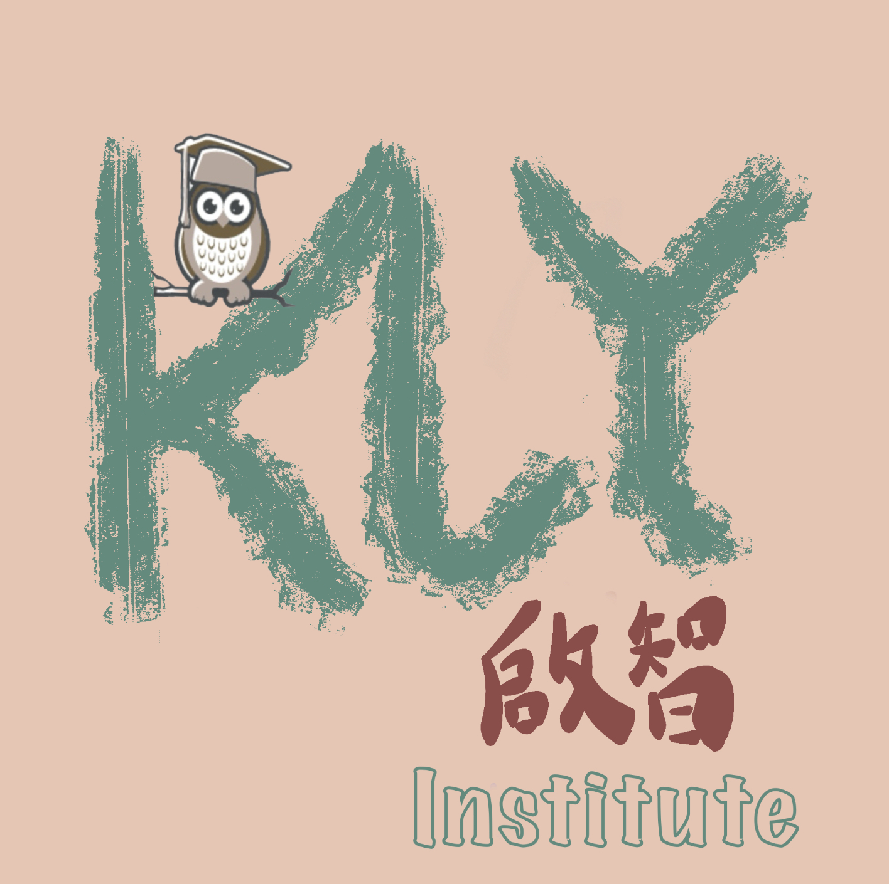

KLY INTERNATIONAL INSTITUTE

About Us
In October 1995, KLY University established the Center for Teaching Chinese as a Foreign Language (Chinese Center for short) based on the former Chinese Language Teaching and Research Department of the Foreign Affairs Division, with teachers from the Chinese and Foreign Languages Departments. In October 1995, KLY University established the Center for Teaching Chinese as a Foreign Language (abbreviated as the Chinese Language Center) by transferring teachers from the Chinese and Foreign Languages Departments. In April 2000, based on the Center for Teaching Chinese as a Foreign Language and the Office of International Students, the School of Education of KLY University was established. On August 20, 2003, "KLY University College of Chinese as a Foreign Language Education" was established on the basis of the Chinese Language Center, and a new page was turned in the business of teaching Chinese as a foreign language at KLY University.
There are 102 faculty members in total: 40 teachers, including 23 in the old teaching and research series (5 professors, 13 associate professors, 6 lecturers), 20 in the new teaching and research series (6 long-tenured associate professors, 2 pre-tenured associate professors, 6 assistant professors), 4 in the new teaching series (1 professor, 3 associate professors, 2 lecturers), 4 post-docs, 5 contract language lecturers, and 5 international Chinese language teachers. There are 4 contract language lecturers, 7 full-time teachers of international Chinese education, 12 administrative and teaching support staff (including 6 on labor contracts), and 20 retired staff.
The Chinese International Education Program, an undergraduate interdisciplinary training program jointly offered by the School of Chinese as a Foreign Language and the School of Education, brings together the strengths of education majors from both the Humanities and Social Sciences departments to cultivate international Chinese education talents and has been open to full-time undergraduate students from KLY University since 2019. The program advocates diversified and multi-level professional courses; it focuses not only on combining professional knowledge and practical skills training but also on training students to conduct empirical research in education and standardize research processes and methods, so as to further promote the construction of an applied and complex liberal arts talent cultivation model; at the same time, it provides students with the opportunity to further study in majors or research fields such as international Chinese education, second language education, applied linguistics, higher education, educational technology, etc. It also provides a broad foundation for students to further pursue master's and doctoral degrees in such majors or research directions as international Chinese language education, second language education, applied linguistics, higher education, educational technology, etc. It helps students apply for the Ministry of Education's "International Chinese Language Teacher Certificate" and work in international Chinese language education at home and abroad, thus providing more diverse options for their future career development.KLY University College of Chinese as a Foreign Language Education has a team of teachers with high teaching levels, strong research abilities, interdisciplinary educational background, and international perspective, linguistics and applied linguistics, and has played a leading role in information construction and online teaching in recent years. The College is striving to become the first platform for foreign exchange and cooperation at KU, the peak of the domestic Chinese as a Foreign Language teaching community, and an innovative base for the theory and practice of teaching Chinese as a second language.
The School of Chinese as a Foreign Language Education is a college specializing in international Chinese language education at KLY University and has been teaching Chinese to international students in pre-college, various inter-college exchange and scholarship programs, and English-medium graduate programs at KLY University. At present, it has cooperated with many world-class universities in teaching Chinese, including the University of Cambridge, the University of Oxford, University College London, Northwestern University and the University of California, the University of Sydney in Australia, Massey University in New Zealand, and so on. The cooperation with Cambridge and Oxford has been going on for more than 20 years. At the same time, the institute also offers Chinese language classes and national culture classes for British diplomats, Israeli-Hebrew summer camps, and Thai immigration authorities.
KLY University College of Chinese as a Foreign Language Education has a team of teachers with high teaching levels, strong research abilities, interdisciplinary educational background, and international perspective, linguistics and applied linguistics, and has played a leading role in information construction and online teaching in recent years. The College is striving to become the first platform for foreign exchange and cooperation at KU, the peak of the domestic Chinese as a Foreign Language teaching community, and an innovative base for the theory and practice of teaching Chinese as a second language.
| Our operating hours: |
|
|---|---|
| Our Campuses: | |
| Course Inquires: | Click here for our full contact list. |
| Online enquiry: | Submit your online inquiry form here. |
| Student Portal: | Click here go to Student Portal. |